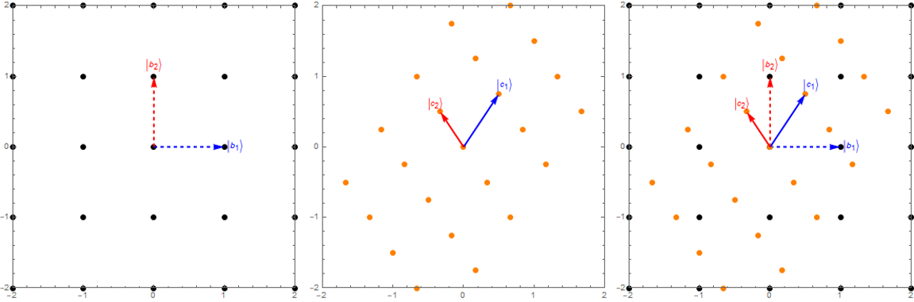

\newcommand{\bra}[1]{\left\langle #1 \right|} \newcommand{\ket}[1]{\left| #1 \right\rangle} \newcommand{\braket}[3]{\left\langle #1 \middle| #2 \middle| #3 \right\rangle}
5. Estrutura matemática da MQ (parte 2)
Nesta semana continuaremos a discutir a estrutura matemática da teoria quântica, complementando a discussão a respeito de transformações lineares e, em particular, mudanças de bases e o processo de diagonalização de um operador (matriz). Também iremos apresentar alguns casos importantes como os operadores projetores em subespaços e o produto tensorial que permite expandir espaços de Hilbert.
Para retornar aos tópicos das aulas anteriores, use o menu de navegação ou clique aqui.
5.7 Transformações lineares e mudanças de base
Na aula anterior nós discutimos como encontrar os autovetores de um operador. Surgiu, então, a questão se os autovetores do operador deveriam ser sempre ortogonais e poderiam formar uma base. Aqui, vamos iniciar esta discussão com a questão, geral, se os autovetores de um operador podem sempre formam uma base do espaço vetorial. Nos casos onde isso é possível, como construí-la?
Primeiro, vamos relembrar que condições um conjunto deve satisfazer para formar uma base. De maneira simples, para formar uma base do espaço (ou subespaço) um conjunto de autovetores devem satisfazer duas condições:
Condições para formar uma base
- Ser ortonormais.
- Satisfazer a relação de completeza.
Para ajudar a fixar esses conceitos, considere o seguinte exemplo.
Exemplo
Considere o operador dado pela matriz
Observe que seus autovalores são \lambda_{1,2}=\pm 1.
Tendo como autovetores:
É fácil verificar que esse autovetores são ortonomais, portanto satisfazendo a primeira condição.
Agora, precisamos verificar se a segunda condição também é satisfeita. Ou seja, se o conjunto é completo. Para isso, fazemos:
Portanto, verificamos que a relação de completeza também é satisfeita.
A conclusão final é que, neste caso, os autovetores formam uma base. De faot, é fácil verificar que qualquer vetor de dimensão dois pode ser escrito numa expansão em termos do conjunto \{ \ket{u_1},\ket{u_2} \}.
Seja, por exemplo, \ket{\psi} um vertor arbitrário
Forma diagonal
O operador \hat{Z} é um exemplo de operador na forma diagonal.
Representação diagonal
Um operador \hat{A} está na forma diagonal quando escrito
onde os vetores \ket{u_i} formam uma base ortonormal. Neste caso, a matriz A tem a forma
Um operador é dito diagonalizável quando pode ser escrito na forma diagonal. A representação diagonal também é chamada de decomposição ortogonal. Nem todos os operadores de um espaço vetorial tem forma diagonal.
Na última aula, vimos também um exemplo em que
tem autovetores que não são ortonormais
Será que é possível reescrever o operador M numa forma diagonal? Aliás, qual seria o significado disso e quais propriedades tal operação deveria satisfazer, se existisse? Mais importante ainda, qual seria sua utilidade?
Mais adiante veremos quais são as condições necessárias para um operador ser diagonalizável. Veremos também como fazer para diagonalizá-lo. Antes, vamos introduzir mais dois conceitos importantes. Os conceitos de mudança de base e transformações de similaridade.
Mudança de base
Para efeito de comparação e analogia, podemos pensar na mudança de base como algo parecido à mudança de sistema de coordenadas, com o qual já estamos acostumados na Física.
Como sabemos, a representação de um vetor (ou operador), por exemplo, na forma matricial irá depender da base usada para representá-lo, pois em geral os valores das componentes serão diferentes, mas isso não altera o significado de cada um desses objetos.
Dado um vetor qualquer
expresso nas bases \{ \ket{b_i} \} e \{ \ket{c_i} \}, é sempre possível achar uma transformação de coordenadas que permita expressar as coordenadas c_i desse vetor a partir das coordenadas b_i.
Para isso, basta encontrar a matriz (operador linear), S, que leva cada vetor \ket{b_i} no correspondente vetor \ket{c_i}:
Uma forma de pensar nisso é que a transformação S leva os vetores da base \ket{b_i} nos vetores da base \ket{c_i}. Neste caso, S é efetivamente um mapa de como fazer essa transformação dos vetores da base, e é uma receita (mapa) de como "levar" cada ponto de um sistema de coordenadas no ponto correspondente no outro sistema de coordenadas. Na verdade, é importante lembrar que aqui estamos interessados nas coordenadas (representação) do vetor, que está sendo representado nas diferentes bases (sistemas de coordenadas).
 Figura 1: Efeito de uma tranformação linear (S) num grid de pontos e nos versores da base
Note, porém, que nessa interpretação todo o sistema de coordenadas é transformado. Ou seja, o grid de pontos do espaço, onde cada ponto é espaçado pelos versores (vetores unitários) da base é transformado. Isso, em geral, representa "deformação" do espaço (mais estritamente, do grid de prontos representando o espaço). Se for linear, essa transformação fará com que um conjunto de pontos igualmente espaçados continue igualmente espaçados, mas como eles podem sofrer uma mudança de escala, os comprimentos e áreas do grid não são necessariamente conservados. Na verdade, pode-se demonstrar que as áreas serão escaladas por uma fator exatamente igual ao determinante da matriz de transformação.
Como determinar a matriz de transformação?
Na verdade, é bem simples. Basta considerar o efeito nos vetores da base. Usaremos a Fig. 1, acima, para ilustrar com um exemplo que nos ajudará a entender o processo. Imaginando que estamos indo da base \ket{b_i}, com os vetores indicados pelas setas pontilhadas, e cujas coordenadas são
os novos vetores da base \ket{c_i} são dados por
Portanto, as colunas da matriz de transformação correspondem aos vetores transformados da nova "base" (agora não mais ortonormal).
Dada a matriz de transformação S, sabemos como todos os vetores do espaço se transformam, pois sabemos como os vetores da base se transformam. Assim, podemos facilmente traduzir as coordenadas de uma base na outra, com facilidade. Mas como são transformados (ou representado) os operadores lineares de uma base para outra?
A resposta simples é, novamente, ver o efeito da ação sobre os vetores expressos nas duas representações (bases) e usar as relações de transformação entre os vetores das buas bases para expressar os elementos de matriz do operador na nova base.
Pode-se demonstrar (verifique!) que, se L for a representação matricial de um operador \hat{L} na primeira base \ket{b_i}, a sua representação matricial na segunda base será dada por
Transformações de similaridade
Para simplificar a notação, vamos expressar os operadores por matrizes, mas o resultado discutido aqui é geral.
Matrizes (transformações) similares
- Uma matriz B é dita similar a uma matriz A se B = S^{-1}A\,S para qualquer matriz invertível S.
- Se B é similar a A, então B tem os mesmo autovalores de A. Isso pode ser facilmente demonstrado (verifique!).
- Como consequência de ter os mesmos autovalores, as duas matrizes terão também o mesmo traço (soma dos autovalores) e determinante (produto dos autovalores).
- Se a matriz S for unitária ela preservará normas e ângulos, de modo que se A for uma representação do operador \hat{A} numa base ortonormal, então B também o será. Como sempre trabalhamos com bases ortogonais, estaremos interessados geralmente em transformações unitárias de similaridade.
Uma questão interessante agora é se seria possível, em geral, encontrar uma transformação S que transforme os autovetores de uma matriz M, geral, de tal modo que a eles passem a formar uma base do espaço. Algo, por exemplo, inverso ao mostrado na Figura 1. Em outras palavras, será que é possível encontrar uma transformação de similaridade S que coloque a matriz M numa forma diagonal (i.e., que diagonalize M)?
Como vimos, nesta formulação da MQ usamos operadores lineares para representar grandezas físicas observáveis. Nesse contexto, vimos que os autovalores do operador estão associados aos valores das medidas daquele observável. Portanto, é muito desejável preservar os autovalores de um operador que represente grandezas físicas, se quisermos buscar transformação que o diagonalize. Para esse efeito, portanto, usaremos transformações de similaridades. Mas como encontrar tais transformações? Como diagonalizar M?
5.8 Diagonalização de operadores
Como estamos interessados e na diagonalização de operadores observáveis, vamos considerar aqui uma operador Hermitiano C, qualquer, que representa uma dada grandeza física. Estamos interessados em escrever esse operador numa forma diagonal D, seguindo uma transformação de similaridade S:
Como fazemos para encontrar a transformação S?
Procedimento para encontrar a transformação S
- Encontre os autovalores e autovetores da matriz C
- Normalize os autovetores de C
- Forme a matriz S de modo que as colunas dessa matriz sejam os autovetores (colunas) normalizados de C
- A matriz S^{-1} é a matriz inversa1 de S, tal que S^{-1}S=SS^{-1}=\mathbb{1}.
Fica como um exercício sugerido demonstrar que este procedimento resulta na forma diagonal
onde \lambda_i são os autovalores de C e D.
Será que esse procedimento funciona sempre? Não, nem sempre! Nem todas as matrizes são diagonalizáveis. Para isso algumas condições devem ser satisfeitas pela matriz C.
A primeira condição é que para ser diagonalizável uma matriz deve ter autovetores que geram o espaço. Assim, se todos os autovetores forem distintos, há uma boa chance dela ser diagonalizável. Mesmo quando há raízes múltiplas (degenerescência), em alguns casos, a matriz ainda pode ser diagonalizada, mas não sempre.
Pode-se mostrar, porém, que toda matriz normal é diagonalizável. Embora, essa não é uma condição necessária. Além disso, todas as matrizes Hermitianas e todas as matrizes unitárias também são diagonalizáveis.
5.9 Subespaços e projetores
Considere um espaço n-dimensional \mathcal{H} com um base ortonormal \ket{1},\ket{2},\dots,\ket{n}. Um subespaço \mathcal{S} de \mathcal{H} é um subconjunto de \mathcal{H} tal que \mathcal{S} é ele próprio um espaço vetorial, com respeito as operações de soma e multiplicação por um escalar. Podemos verificar que \mathcal{S} é um espaço vetorial usando os mesmos critérios usuais, mas se \mathcal{S} for um subconjunto de \mathcal{H}, basta verificar dois critérios
- O vetor zero (nulo) pertence a \mathcal{S}
- Para todos os vetores \ket{u}, \ket{v} em \mathcal{S} e escalar \alpha, temos que \ket{u}+\ket{v} e \alpha \ket{u} pertencem a \mathcal{S}.
Para isso é útil usar o operador projetor, que já discutimos na seção 5.6. Relembrando sua definição:
Operador de projeção: projetor
Suponha um subespaço de dimensão m, onde m<n, que tem uma base ortonormal \mathcal{U} = \{ \ket{u_1},\ket{u_2},\dots,\ket{u_m} \}. O operador de projeção \hat{P}_u é dado por
O operador de projeção tem duas propriedades importantes:
- \hat{P}=\hat{P}^\dagger, isto é, ele é um operador hermitiano.
- \hat{P}=\hat{P}\hat{P} \equiv \hat{P}^2, é igual ao seu quadrado.
Podemos formar o projetor de apenas um vetor da base \hat{P}_i=\ket{u_i}\bra{u_i} (imagine que o somatório estende-se apenas ao vetor \ket{u_i}). Esse operador é totalmente válico e obedece as duas propriedades acima. Ele claramente é hermitiano, por exemplo, e também obedece a segunda propriedade (verifique!).
Considere, por exemplo, o efeito de \hat{P}_i \ket{\Psi}:
Veja que isso efetivamente "projeta" a componente de \ket{\Psi} na direção do vetor da base \ket{u_i}.
Observe também que o projetor de um dado espaço (subespaço) é igual ao opeador identidade daquele espaço (subespaço), satisfazendo a relação de completeza daquele espaço (subespaço):
onde \mathbf{I}_m=\mathbb{1}_m expressa explicitamente uma matriz identidade de ordem m.
5.10 Funções de operadores
Assim como podemos expandir uma função ordinária f(x) numa série de Taylor2:
podemos, de forma similar, generalizar essa ideia para definir a função de um operador F(\hat{A}):
Note, porém, que em geral os coeficientes a_i podem ser números complexos.
Exemplo: exponencial de um operador
Vamos considerar um exemplo bastante importante na mecânica quântica, que é a exponencial de um operador. Usando a relação que aprendemos entre operadores e matrizes, usaremos a notação de matrizes, para simplificar.
onde \mathbf{I} é matriz identidade, e H^k é potência k da matriz H.
5.11 Generalização para espaços contínuos
Para ajudar a fixar as ideias de espaços vetorias, aproveitando a analogia com os vetores do espaço euclidiano, que estamos acostumados na Física, até este ponto temos nos limitado à espaços discretos de dimensões finitas. Porém, o formalismo de espaços vetorias pode ser facilmente extendido também a espaços mais gerais, como espaços contínuos e infinitos.
Neste caso, em geral, estamos falando do espaço das funções contínuas. Na verdade, mesmo sem perceber, já temos alguma familiaridade com esse tipo de espaço, mesmo na mecânica quântica, pois começamos a nossa discussão neste curso, falando da equação de Schrödinger e funções de ondas. Pois então, como seria de se esperar, as funçãos de ondas da mecânica quântica formam um espaço vetorial, com as mesmas propriedades dos espaços discretos que temos discutidos até agora.
A seguir fazeremos uma breve introdução da notação usada para descrever espaços vetorias contínuos na mecânica quântica.
Vetores
Assim como os vetores de um espaço discreto e finito podem ser expandidos numa base ortonormal \{ \ket{u_i},\ i=1,2,\dots \} com um número finito de componentes, os vetores de um espaço contínuo são representados numa base ortonomal \{ \ket{w_{\alpha}},\ x_1 \le \alpha \le x_2 \} por um número infinito de pontos no intervalo [a,b]. Isto é, os (infinitos) coeficientes da expansão são representados por uma função c(\alpha), nesse intervalo. Neste caso a expansão é escrita como:
Produto interno
Sendo o vetor \ket{\phi}=\int b(\alpha) \ket{w_{\alpha}} d \alpha. O produto interno dos vetores \ket{\phi} e \ket{\psi}, sendo os dois vetores expressos na base \ket{w_{\alpha}} é dado por:
Bases ortonormal
No espaço discreto temos:
onde \delta_{ij} é o delta de Kronecker.
No espaço contínuo temos:
onde \delta(\alpha-\alpha') é a função delta de Dirac.
Relação de completeza
Representação de operadores
Podemos também estender a representação de um operador para um espaço contínuo de maneira bastante similar e natural. Se imaginarmos uma representação matricial, o operador corresponderia a uma matriz "infinita", com um número infito de linhas e colunas, e os elementos de matrizes são pontos:
Seguindo numa analogia geométrica, podemos imaginar um plano de pontos (elementos de matriz) cujos valores são dados por uma função de duas varíaveis A(\alpha, \alpha^{\prime}), determinador por:
Funções de ondas
A generalização para espaços contínuos nos permite conectar as diferenes representações da mecânica quântica, assim como várias ideias já discutidas neste curso, mas que pareciam estar, literalmente, em "espaços" (contextos) diferentes. Por exemplo, nos permite conectar a mecânica ondulatória com a mecância matricial, assim como formulação em termos de funções de ondas \psi(x) com o vetor \ket{\psi}.
Na linguagem dos espaços vetoriais contínuos, a função contínua x é uma representação (coeficientes) do vetor \ket{x}, da mesma forma, o momento linear está relacionado a um vetor \ket{p}. Nesta descrição, as função de ondas \psi(x) e \bar{\psi}(p) são dadas por
e correspondem, respectivamente, às representações do vetor \ket{\psi} nas bases de posição e momento, definidas pelas funções
Observe que essas funções de base satisfazem as condições necessárias
Além disso, o produto interno entre posição e momento é dado por
Finalmente, usando a relação de completeza podemos mostrar que as funções de ondas nos espaços da posição e momento estão relacionados através de uma transformada de Fourier:
5.12 Produto tensorial
Se um \mathcal{V} é um espaço de dimensão p e \mathcal{W} é um espaço de dimensão q, então o espaço
tem dimensão p q.
Seja |v\rangle \in V e |w\rangle \in W dois vetores desses espaços. Então o vetor |v\rangle \otimes|w\rangle \in V \otimes W.
Notações alternativas do vetor |v\rangle \otimes|w\rangle incluem |v\rangle|w\rangle e |v w\rangle.
Se A é um operador que atua no espaço V e B é um operador que atua no espaço W, então o operador formado pelo produto tensorial dado por
atua nos vetores |v\rangle \otimes|w\rangle da seguinte maneira:
Considerando agora a norma de um vetor que pertença a V \otimes W . Suponha que
Neste caso, a norma é dada por
Representação matricial do produto tensorial
Seja A uma matriz (m \times n) e B uma matriz (p \times q). O produto tensorial A \otimes B é a matriz com m p linhas e n q colunas. Os elementos desta matriz são construídos pelas submatrizes:
ou seja, multiplique B por cada componente de A e arrange essas submatrizes numa matriz maior. A matriz completa, representando o produto tensorial é dada por:
Um vetor coluna em duas dimensões possui duas linhas e uma coluna. Como o produto tensorial entre uma matriz (m \times n) e uma matriz (p \times q) tem m p linhas e n q colunas, o produto tensorial entre as duas matrizes (2 \times 1) terá (2 \times 2) = 4 linhas e (1 \times 1) = 1 coluna. A forma de calcular isso é:
Agora considere o produto tensorial de duas matrizes 2 \times 2.
Esse produto tensorial será uma matriz (4 \times 4):
-
Como calcular a matriz inversa
Se \mathbf{A} uma matriz não singular, sua inversa é dada por:
\mathbf{A}^{-1}=\frac{1}{|\mathbf{A}|} \mathbf{C}^{\mathrm{T}}=\frac{1}{|\mathbf{A}|}\left(\begin{array}{cccc} \mathbf{C}_{11} & \mathbf{C}_{21} & \cdots & \mathbf{C}_{n 1} \\ \mathbf{C}_{12} & \mathbf{C}_{22} & \cdots & \mathbf{C}_{n 2} \\ \vdots & \vdots & \ddots & \vdots \\ \mathbf{C}_{1 n} & \mathbf{C}_{2 n} & \cdots & \mathbf{C}_{n n} \end{array}\right)onde \mathbf{C} é a matriz de cofatores \mathbf{C_{ij}} = (-1)^{i+j}\ \mathbf{D_{ij}}, sendo \mathbf{D_{ij}} o determinante da matriz menor \mathbf{\tilde{A}_{ij}}, obtida a partir da exclusão da linha \mathbf{i} e coluna \mathbf{j} da matriz \mathbf{A}. O termo |\mathbf{A}|=\operatorname{det}(\mathbf{A}) representa o determinante de \mathbf{A}.
Se \mathbf{A} for uma matriz 3x3, sua inversa é dada por:
\mathbf{A}^{-1}=\frac{1}{|\mathbf{A}|} \left(\begin{array}{lll} \left|\begin{array}{ll} a_{22} & a_{23} \\ a_{32} & a_{33} \end{array}\right| & \left|\begin{array}{ll} a_{13} & a_{12} \\ a_{33} & a_{32} \end{array}\right| & \left|\begin{array}{ll} a_{12} & a_{13} \\ a_{22} & a_{23} \end{array}\right| \\ \left|\begin{array}{ll} a_{23} & a_{21} \\ a_{33} & a_{31} \end{array}\right| & \left|\begin{array}{ll} a_{11} & a_{13} \\ a_{31} & a_{33} \end{array}\right| & \left|\begin{array}{ll} a_{13} & a_{11} \\ a_{23} & a_{21} \end{array}\right| \\ \left|\begin{array}{ll} a_{21} & a_{22} \\ a_{31} & a_{32} \end{array}\right| & \left|\begin{array}{ll} a_{12} & a_{11} \\ a_{32} & a_{31} \end{array}\right| & \left|\begin{array}{ll} a_{11} & a_{12} \\ a_{21} & a_{22} \end{array}\right| \end{array} \right)Se \mathbf{A} for uma matriz 2x2, sua inversa é simplesmente:
\mathbf{A}^{-1}=\left(\begin{array}{ll} a & b \\ c & d \end{array}\right)^{-1}=\frac{1}{\operatorname{det}(\mathbf{A})}\left(\begin{array}{rr} d & -b \\ -c & a \end{array}\right)=\frac{1}{a d-b c}\left(\begin{array}{rr} d & -b \\ -c & a \end{array}\right) -
Séries de Taylor
Para uma função contínua f(x), que seja infinitamente diferenciável, a série de Taylor é uma sua expansão em série de potencias do tipo:
f(x_0) = \sum_{k=1}^{\infty} \frac{1}{k!} \left(\frac{df}{dx}\right)^k_{x=x_0} (x-x_0)^k = \sum_{k=1}^{\infty} \frac{f^{('k)}(x_0)}{k!} (x-x_0)^k.